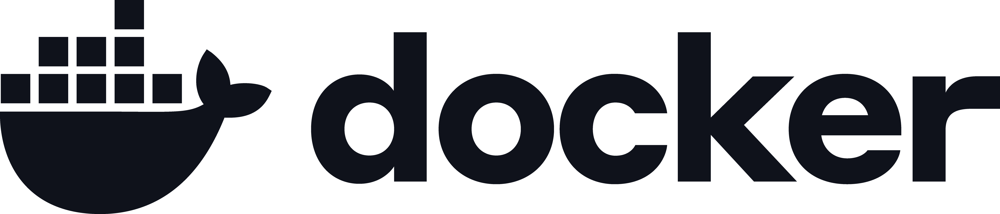

DISKMAP
"Internal web tool developed at the Barcelona Supercomputing Center for the Gabaldon Lab to monitor and analyze storage quotas on the MareNostrum supercomputer. DiskMap provides a real-time visual overview of how the lab's storage resources are being used. It allows users to track quota consumption, analyze the number of files and their modification dates, identify users consuming the most space, and compare storage usage across different projects and directories. The goal is to turn complex filesystem data into a clear and accessible interface, making it easier to understand storage usage and identify where the lab's resources are being consumed.""
BARCELONA SUPERCOMPUTING
CENTER
BCN-ESP 41.3974° N, 2.1312° E


We developed DiskMap with the guidance of my mentor and colleague Arnau, who helped us understand the MareNostrum environment and determine how to retrieve the required data. We worked on both the frontend and backend, creating a clean and easy-to-understand interface for Gabaldon Lab researchers.The backend connects to MareNostrum via SSH to retrieve the required information, while the frontend communicates with the backend through APIs. The backend processes the filesystem data and uses a small database to keep track of thousands of directory paths, automatically updating. We also used Apache ECharts with Svelte to turn this data into clear and interactive visualizations, making it easier to understand and diagnose storage quota usage.